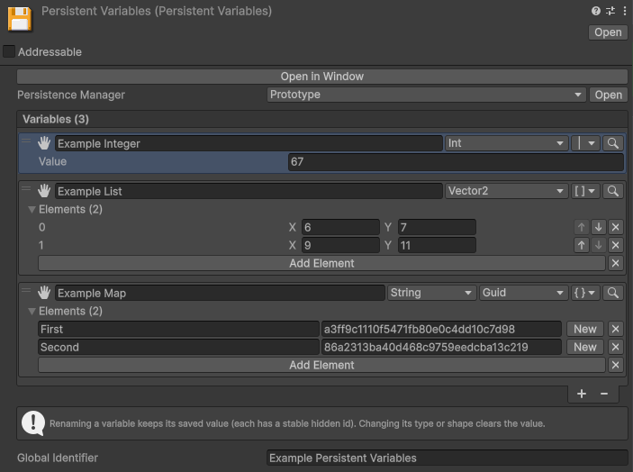
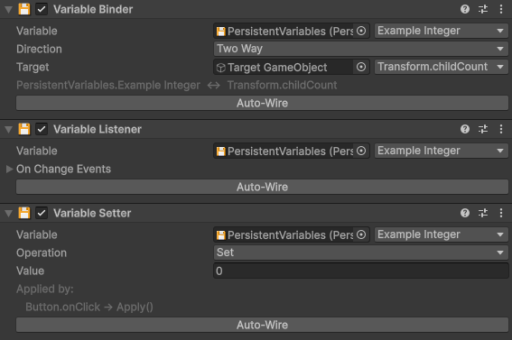
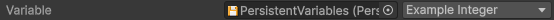
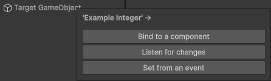
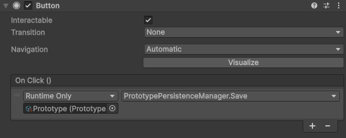

No-Code For designers
The No-Code modules store values and react to them entirely in the editor, with assets, components and UnityEvents. Everything here is also reachable from code, in For developers.
Persistent Variables
PersistentVariables is a ready-made asset holding a named set of values, authored
in the inspector. It is a persistent object like any other: it gets a Persistence Manager
dropdown and saves the same way.
Create one via Create > Persistent Asset > Persistent Variables, assign a Persistence Manager, then add variables. Each has a name, a type and a default value. Over 40 types are supported:
- Primitives:
bool,string,char, and every number type (int,long,float,double,byte,sbyte,short,ushort,uint,ulong,decimal). - Any enum (no setup needed).
- Unity types:
Vector2/3/4andVector2Int/3Int,Quaternion,Color,Color32,Gradient,Rect,RectInt,RectOffset,Bounds,BoundsInt,Pose,Plane,Matrix4x4,LayerMask,RenderingLayerMask,RangeInt,Resolution,Hash128,Keyframe,AnimationCurve. - System types:
DateTime,DateTimeOffset,TimeSpan,Guid,Version,Uri. - Any project asset (no setup needed): pick Asset in the type menu, then the kind of asset it holds, and the variable takes an object field like any inspector reference. See asset variables below.
- Lists and maps of any of the above.

PersistentVariables asset is a dynamic data bag:
a named, typed, observable set of values that saves itself, with no data class to write. Reach
it from code through a VariableRef (see For developers).
Variables holding an asset
A variable can hold a project asset: the selected character, the equipped weapon, the chosen music theme. Pick Asset in the type menu, choose which kind of asset it accepts, and drag one into the field. It is saved like any other value.
The components
Three components connect a variable to your scene, each configured in the inspector:
- Variable Binder: keeps a variable and a target in sync, one-way or both ways, so a change on one side updates the other (a UI slider and a "volume" variable, for example).
- Variable Listener: raises a UnityEvent whenever the variable changes.
- Variable Setter: changes a variable from a UnityEvent (a button click). It can Set, Toggle, Increment, Add or Reset the value.

A typical setup: a Setter on a button increments a "coins" variable, a Listener updates a label
when it changes, and it all persists because the PersistentVariables asset has a
manager.
"Score: {0}" or a numeric specifier
like "N0". Formatting a value into text is one-way (variable to label).
Connecting variables (drag and drop)
There are two ways to point a component at a variable. To drag a variable, grab it by its hand, the drag handle at the left of its row in the Persistent Variables inspector.
Onto a component field
Every component has a variable field. Fill it by dragging a variable from the Persistent Variables asset onto the field, or by assigning the asset and picking the variable from the dropdown next to it.

Onto a GameObject
Drag a variable straight onto a GameObject, in the Hierarchy or the Scene. A menu asks what to create (a Binder, a Listener or a Setter), prompts for whatever that component needs (a binder's target property, for instance), and adds it already wired.

Saving and loading from the inspector
Persistence is automatic, so there is usually nothing to wire. For an explicit save, load or clear from a button, the manager exposes Save, Load and Clear actions, picked straight from a button's event list. These zero-argument actions are fire-and-forget, so they also work with an asynchronous manager (a server or Cloud Save).
Slots copy / rename / delete operations are all code-only.

Input bindings
The Input module makes a player's remapped controls persist between sessions. It adds an Input Binding variable type, so a control binding can be stored like any other persistent value and is restored on the next launch.
A "press a key to rebind" screen needs a few lines of glue: capturing the new binding, and applying the saved one on startup. That API is in For developers.
Localization
The Localization module persists the player's chosen language. It adds a Locale Identifier variable type, so the selected locale is stored like any other value and reapplied on the next launch.
Applying the saved locale on startup and switching it from a language dropdown use a small helper, covered in For developers.
For developers
Everything above is reachable from code, to mix scripting with the no-code setup.
Reading and writing variables
Reference a variable with a non-generic VariableRef field when the type is not
known ahead of time, or a typed VariableValueRef<T>,
VariableListRef<T> or VariableMapRef<TKey, TValue> when it
is. Either is assigned in the inspector the same way as a component (drag or dropdown), and its
live value is read and written in code. Collection variables surface as
ObservableList<T> and ObservableDictionary<TKey, TValue>,
which raise change events.
public class Shop : MonoBehaviour
{
[SerializeField] VariableValueRef<int> coins; // assigned in the inspector
[SerializeField] VariableListRef<string> unlockedSkins;
[SerializeField] VariableMapRef<string, int> owned; // a map variable
public void Buy(int price)
{
if (coins.Value >= price)
coins.Value -= price; // read and write the live value
unlockedSkins.List.Add("gold"); // ObservableList<T>, raises change events
owned.Map["gold"] = 1; // ObservableDictionary<TKey, TValue>, also observable
}
}Type conversion on binders
A VariableBinder can route through a ValueConverter to adapt the
variable's type to the bound member's type (an int variable driving a
string label, for example). Built-in converters cover the common cases. Add your
own by subclassing ValueConverter<TFrom, TTo>, which is discovered
automatically; a two-way binding needs one converter each way:
public class IntToString : ValueConverter<int, string>
{
protected override string Convert(int value) => value.ToString();
}Input & localization helpers
The Input and Localization modules each expose a static helper for the bits that need code:
InputBindingPersistence: apply a stored binding on startup, capture the current one, or rebind and store in a single call for a remap screen.LocalePersistence: apply the saved locale on startup, capture the active one, or select a locale and store it for a language dropdown.
// Both are extension methods on your PersistentVariables asset
variables.ApplyBinding("Jump", jumpAction); // restore on startup
variables.RebindAndStore("Jump", jumpAction); // run a remap screen, then store
variables.ApplyLocale("Language"); // restore on startup
variables.SelectLocale("Language", new("fr")); // pick one from a dropdownApplyLocale and SelectLocale only
work once Unity Localization has finished initializing
(await LocalizationSettings.InitializationOperation); before that they do nothing
and return false. RebindAndStore returns a
RebindingOperation: cancel it in OnDisable / OnDestroy
so its completion callback never runs on a destroyed object.
Custom types and converters
Your own persistable variable types (a VariableTypeCodec<T> with
[VariableType(typeof(T), "id")]),
type conversions (a ValueConverter) and
inspector widgets plug in the same way Input Binding and
Locale Identifier do. See Extending.
// Make a custom type persistable: write it to a string and read it back
[VariableType(typeof(Guid), "guid")]
public class GuidCodec : VariableTypeCodec<Guid>
{
protected override string Write(Guid value) => value.ToString();
protected override Guid Read(string text) => Guid.Parse(text);
}